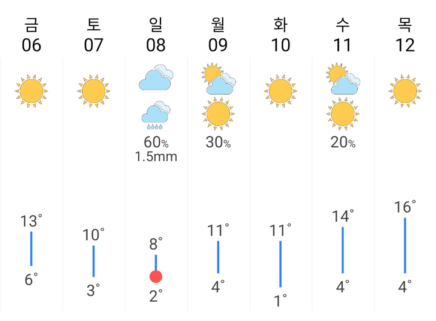

서울 명동11.5°
구름많음
어제보다 +3°
어제보다 +3°

일별 예보
하루 기온 속,
지금은 어디쯤?
막대 양끝은 그날의 최저·최고 기온이에요. 오늘 막대의 빨간 점을 보면, 지금부터 얼마나 더 따뜻해질지 가늠할 수 있어요.

새 홈 화면 위젯
나가기 전, 홈 화면에서.
아이폰에서는 오늘과 어제 같은 시각의 기온을 비교하고, 안드로이드에서는 고른 도시의 현지 시각과 시간별 예보를 함께 볼 수 있어요.